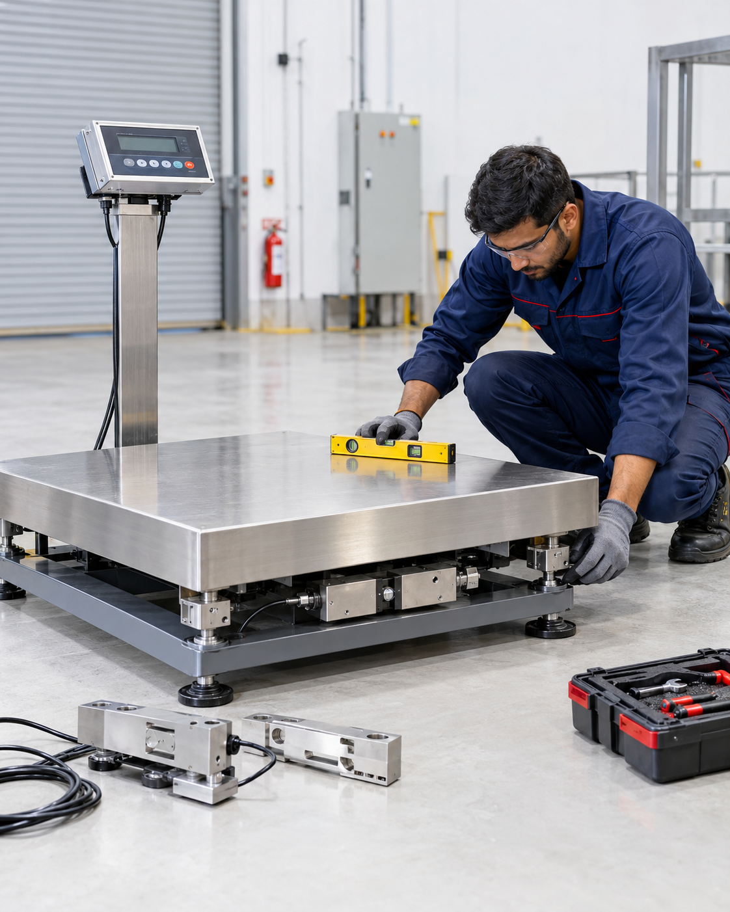
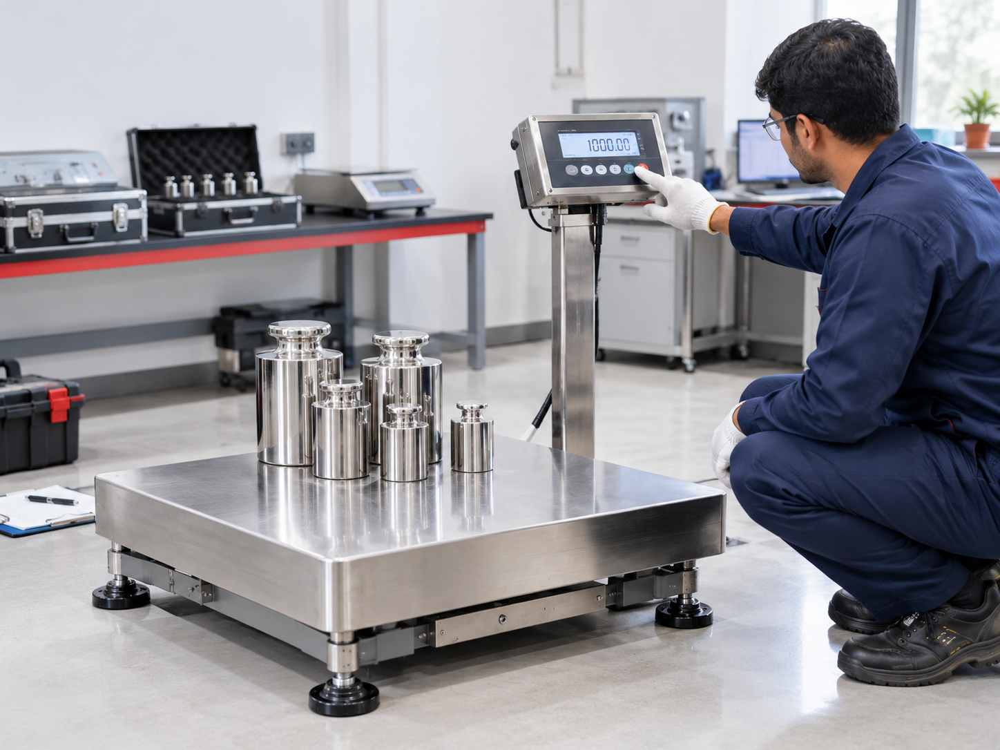
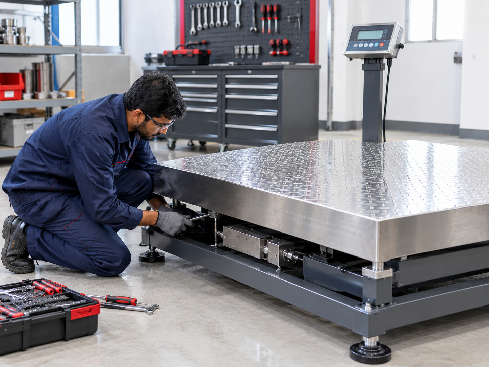
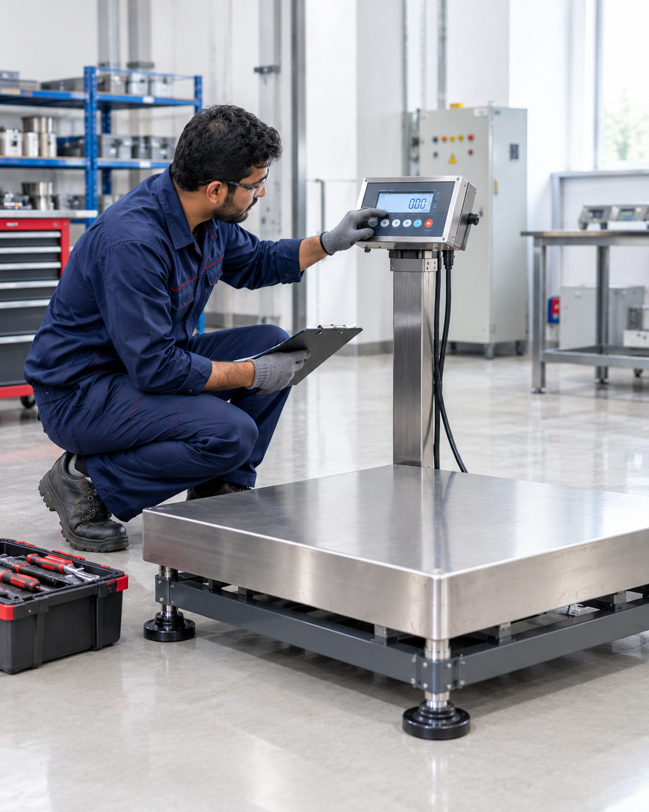

Proper equipment installation is essential for reliable weighing performance. Contact Prime Systems to discuss installation and commissioning requirements for your weighing equipment in Umbergaon, Gujarat.
Discuss installation location, space and equipment-specific site requirements.
Enquire about equipment positioning, setup and installation support, subject to availability.
Discuss commissioning requirements and operational readiness for your equipment.
Installation and commissioning availability must be confirmed with Prime Systems.

Reliable weighing performance starts with appropriate calibration and testing. Contact Prime Systems to enquire about available calibration support, equipment testing and applicable requirements for your weighing equipment in Umbergaon, Gujarat.
Discuss your equipment type and calibration requirements with our team.
Enquire about weighing performance checks and testing options for your equipment.
Confirm applicable standards, documentation and service availability before proceeding.
Calibration and testing services are subject to confirmation by Prime Systems.

Industrial Weighing Equipment
Regular equipment care and timely troubleshooting can help maintain reliable weighing performance. Contact Prime Systems to enquire about available maintenance, fault diagnosis and repair support for your weighing equipment in Umbergaon, Gujarat.
Enquire about equipment inspections and routine maintenance requirements for your weighing system.
Describe your equipment issue to discuss possible diagnostic support and the next steps.
Share your scale type, model and reported fault to enquire about available repair assistance.
Maintenance and repair services are subject to availability and equipment requirements. Please contact our team to confirm.

Weighing Equipment Guidance
Choosing the right weighing equipment starts with understanding your application and operating requirements. Contact Prime Systems to discuss product selection, equipment usage and available technical guidance for your weighing needs in Umbergaon, Gujarat.
Discuss your application, expected load and operating environment to enquire about suitable weighing equipment.
Ask questions about equipment operation, essential handling practices and product-specific requirements.
Share your product model, application or technical concern to discuss the available assistance.
Technical support availability and scope should be confirmed directly with Prime Systems according to your requirements.
Find answers to common questions about weighing equipment installation, calibration, maintenance and technical support.
What services can I enquire about at Prime Systems?
You can contact Prime Systems to enquire about weighing equipment installation, calibration, maintenance, repair and technical support. Service availability depends on the equipment and the specific requirements.
Does Prime Systems provide weighing scale installation?
Contact Prime Systems to confirm installation and commissioning availability for your weighing equipment. Share your product type, installation location and equipment requirements when making an enquiry.
Can I enquire about weighing scale calibration?
Yes, you can contact Prime Systems to enquire about available calibration and testing support. The applicable procedures, requirements and service availability should be confirmed for your particular equipment.
What should I do if my weighing scale is not working correctly?
Note the issue, equipment type and model number, if available. Contact Prime Systems with these details to enquire about troubleshooting guidance and possible repair assistance.
Does Prime Systems offer preventive maintenance?
Preventive maintenance availability should be confirmed directly with Prime Systems. You can discuss your equipment type, operating conditions and maintenance requirements with the team.
Can Prime Systems help me choose the right weighing equipment?
You can enquire about suitable weighing equipment by sharing your application, expected load, required accuracy, platform dimensions and operating environment. The team can discuss relevant product options based on your requirements.
What information should I provide when requesting technical support?
Provide your name, company name, contact details, equipment type, model number, issue description and preferred service location. These details help the team understand your requirements more clearly.
How can I request service in Umbergaon, Gujarat?
Contact Prime Systems through the website's contact page or call +91 98257 85012. Explain your equipment requirements and preferred service location to enquire about available assistance in Umbergaon, Gujarat.
From product selection and technical guidance to service enquiries, connect with Prime Systems to discuss your weighing equipment requirements in Umbergaon, Gujarat.